台灣的紅樹林植物現況
台
灣 西 部 沿 海 的 紅 樹 林 植 物 ， 如 今 只 剩 下
四 種 。 從 文 獻 記 載 中 ，十 九 世 紀 紅 樹 林 分
布 最 北 達 基 隆 ， 往 南 一 直 延 伸 到 屏 東 東
港 附 近 。 日 據 時 代 的 記 錄 則 指 出 ， 北 部
紅 樹 林 以 水筆仔 為 主 ， 南 部 則 有 細 蕊 紅 樹
、 紅 茄 苳 、 五梨跤 、 欖李 、 海茄苳 等 五 種 。
這 呈 呈 帶 狀 分 布 的 六 種 紅 樹 林 植 物 ， 在 50
～ 60 年 代 時 ， 細 蕊 紅 樹
及 紅 茄 苳
已 經 在 高 雄 港 擴 建 工 程 期 間 ， 消 失 殆
盡 ； 其 他 的 西 部 沿 海 各 項 冒 進 的 「 建 設
」 過 程 中 ， 紅 樹 林 被
剷 除 。
|
| 水筆仔是海濱植物中最大的族群，生長在河口的濕地上，約中、高
潮線的位置，六、七月份會開著像海星般的小花，吸引不少昆蟲前
來覓食，次年的四月份長長的胚芽約有20－２５公分高高掛在樹
上，十分特別，水筆仔是河口生態中的生產者，提供蟹、魚、鳥類
的食物或棲息地，減少土壤中的鹽分，防止土壤流失等功能。 |
| 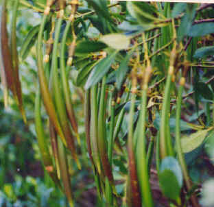 |
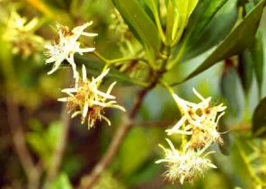 |
|
| 五梨跤：紅
樹 科 植 物 ， 現 在 僅 存 一 千 餘 棵 ， 是 數 量 最
少 的 一 種 ， 零 星 分 布 在 嘉 義 、 台 南 、 高 雄
沿 海 ， 以 台 南 四 草 與 四 鯤 身 一 帶 為 主 要 生
育 區 。 五 梨 跤 是 台 灣 最 典 型 的 熱 帶 紅 樹 林
樹 種 ， 由 於 綿 延 發 達 的 支 持 根 與 寬 大 葉 型
， 使 五 梨 跤 成 為 相 當 具 有 觀 賞 價 值 的 紅 樹
林 植 物 。 五 梨 跤 的 花 期 集 中 在 七 月 ， 而 在
開 花 的 同 時 ， 去 年 的 胎 生 苗 還 賴 在 母 株 上
生 活 ， 也 就 是 說 ， 今 年 開 花 結 果 後 ， 胎 生
苗 一 直 留 著 ， 直 到 第 二 年 的 七 至 九 月 才 獨
立 漂 流 |
| 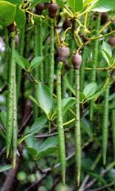 |
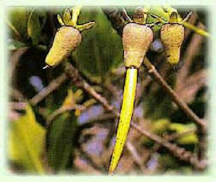
|
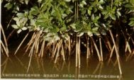
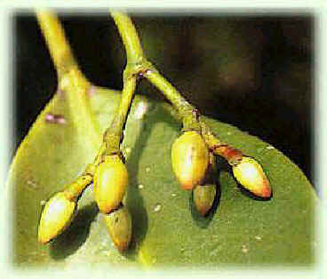 |
| 海茄苳：馬
鞭 草 科 ， 分 布 於 嘉 義 、 台 南 、 高 雄 等 地 海
邊 潟 湖 、 魚 塭 堤 岸 、 排 水 溝 岸 ， 是 常 見 的
護 堤 及 防 風 樹 種 。 海 茄 苳 的 樹 型 頗 似 榕 樹
， 老 樹 的 形 態 高 大 優 美 ， 新 植 株 則 成 灌 叢
狀 ； 六 、 七 月 是 開 花 期 ， 盛 開 的 橘 色 小 花
兩 兩 對 生 ， 帶 著 濃 冽 香 氣 ； 果 實 為 朔 果 ，
狀 如 蠶 豆 ， 在 十 二 月 左 右 成 熟 。 |
| 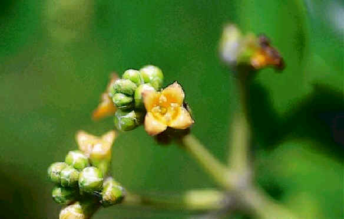 |
 |
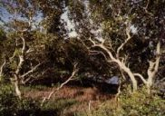 |
| 欖李使
君 子 科 ， 是 四 種 紅 樹 林 植 物 中 最 耐 鹽 的 樹
種 ， 目 前 僅 存 四 千 餘棵 ， 主 要 分 布 於 台 南 四
草 鹽 田 區 的 堤 岸 、 溝 渠 邊 。 欖 李 的 花 期 在
五 月 到 七 月 之 間 ， 滿 樹 的 小 白 花 朵 相 當 醒
目 ； 果 實 是 核 果 ， 是 四 種 紅 樹 林 植 物 成 熟
最 快 的 樹 種 。 外 果 皮 具 海 綿 組 織 ， 有 助 於
水 力 傳 播 。 台 灣 的 欖 李 開 白 色 花 ， 婆 羅 洲
則 有 另 一 種 葉 型 較 大 、 開 紅 色 花 的 欖 李 。 |
| 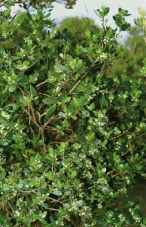 |
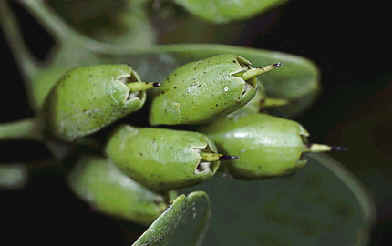
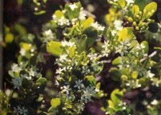 |
 |